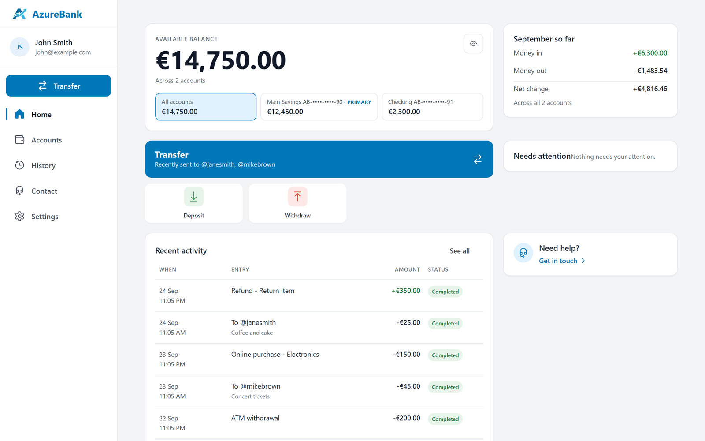
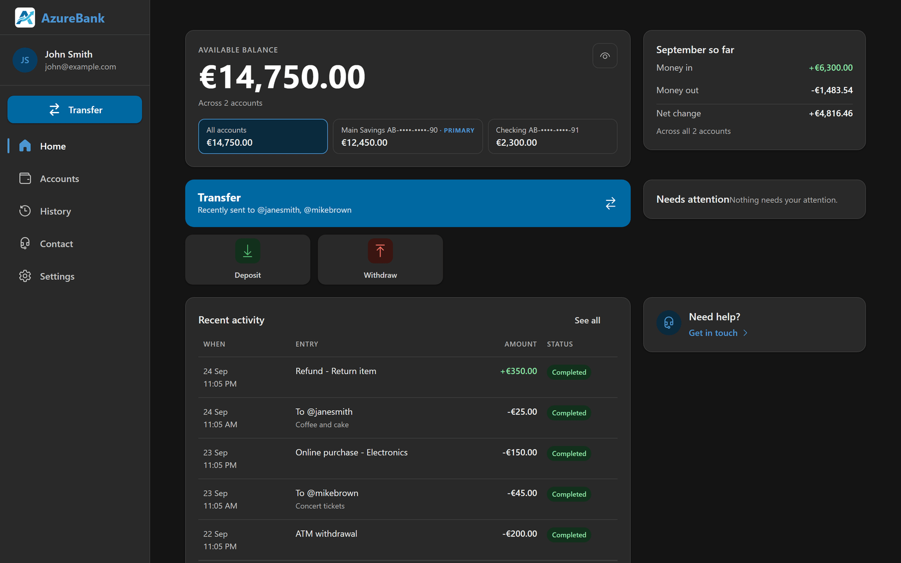
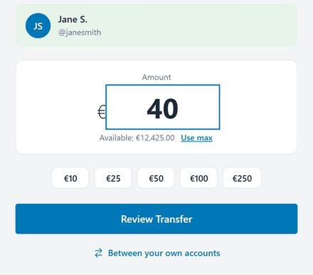
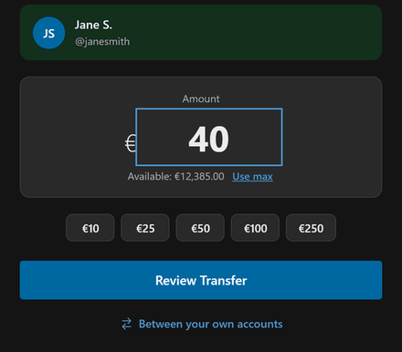
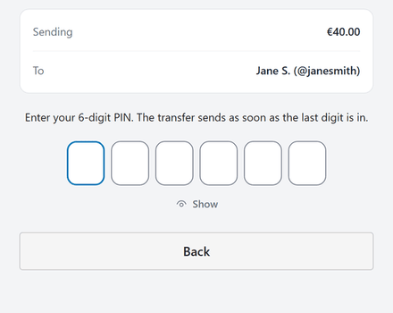
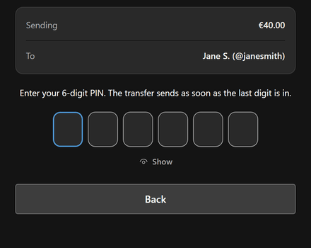
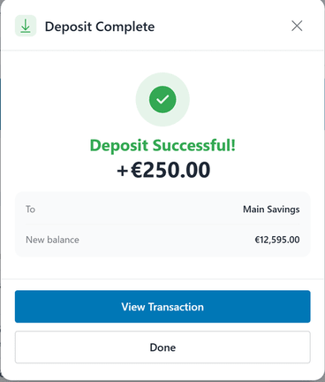
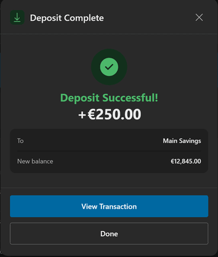

A working bank. Open it and try to break it. Una banca che funziona. Aprila e prova a romperla.
AzureBank is my portfolio project: a .NET 10 API behind a BFF, a React app and SQL Server, live on Azure. A payment is applied once, the access token never reaches the browser, and every sensitive action leaves a record that can be checked.
AzureBank è il mio progetto di portfolio: un'API .NET 10 dietro un BFF, un'app React e SQL Server, online su Azure. Un pagamento viene eseguito una sola volta, il token di accesso non arriva mai al browser e ogni azione sensibile lascia una traccia che si può verificare.
The demo is asleep. Starting it takes about 25 seconds. La demo è spenta. Per avviarla servono circa 25 secondi. Open the demo anyway Apri comunque la demo




- 248pull requests merged 248pull request unite
- 4,347automated tests 2,846 backend, 1,412 frontend, 89 in a real browser on the real stack 4.347test automatici 2.846 di backend, 1.412 di frontend, 89 in un browser vero sullo stack reale
- 64design decisions written down 64decisioni di progettazione documentate
- 9required checks and a security scan before any merge 9controlli obbligatori e un'analisi di sicurezza prima di ogni merge
Counted on Contati il
What it proves Che cosa dimostra
-
A payment is applied once. Un pagamento viene eseguito una sola volta.
Every money operation carries a key the server recognises: retries, network errors and duplicate requests do not create a second charge. It held under 24 identical parallel requests on a real SQL Server.
Ogni operazione che muove denaro porta con sé una chiave che il server riconosce: nuovi tentativi, errori di rete e richieste doppie non creano un secondo addebito. Ha retto a 24 richieste identiche in parallelo su un vero SQL Server.
Decision 0009 Decisione 0009 -
The access token never reaches the browser. Il token di accesso non arriva mai al browser.
A BFF keeps it in a session on the server; the browser gets a cookie that the page's scripts cannot read.
Un BFF lo tiene in una sessione sul server; il browser riceve un cookie che gli script della pagina non possono leggere.
SECURITY.md -
One PIN entry authorises one payment. Un inserimento del PIN autorizza un solo pagamento.
Bound to that account, that amount and that payee, valid two minutes, usable once. Three wrong PINs lock the PIN for 15 minutes.
Legato a quel conto, a quell'importo e a quel beneficiario, valido due minuti, utilizzabile una sola volta. Tre PIN sbagliati bloccano il PIN per 15 minuti.
Decision 0042 Decisione 0042 -
A security log that can be checked. Un registro di sicurezza che si può verificare.
Append-only, each row chained to the one before by a hash, with its own verifier. What it cannot detect is documented.
Le righe si possono solo aggiungere, ognuna è legata alla precedente da un hash, e un programma apposito lo verifica. Ciò che non riesce a rilevare è documentato.
Decision 0044 Decisione 0044
Try it in three minutes Provala in tre minuti
-


Open the demo and press “Try the demo”: you get a private copy that no other visitor sees, two accounts (Main Savings €12,450.00 and Checking €2,300.00) and two months of history.
Apri la demo e premi «Try the demo»: ricevi una copia privata che nessun altro visitatore vede, due conti (Main Savings €12,450.00 e Checking €2,300.00) e due mesi di movimenti.
-




Send money to a contact: type the handle, press “Verify”, enter an amount and confirm with the PIN
123456, which the page shows.Invia denaro a un contatto: scrivi il suo handle, premi «Verify», inserisci un importo e conferma con il PIN
123456, indicato nella pagina. -




Try a deposit and a withdrawal, open the history, reveal the full account number with the PIN.
Prova un deposito e un prelievo, apri lo storico, fatti mostrare il numero di conto completo con il PIN.
Invented money, no sign-up, each copy lasts 24 hours, don't enter real personal data.
Denaro inventato, nessuna registrazione, ogni copia dura 24 ore: non inserire dati personali veri. L'interfaccia della demo è in inglese.
How it is built Com'è costruita
The path of a request Il percorso di una richiesta
Four guarantees, each linked to its proof.
Quattro garanzie, ognuna collegata alla sua prova.
-
Browser side Lato browser
Browser
gets a cookie the page's scripts cannot read
riceve un cookie che gli script della pagina non possono leggere
-
React app App React
To the next stop goes: Alla tappa successiva passa: cookieReact 19 · TypeScript · Fluent UI
-
Server side Lato server
BFF
To the next stop goes: Alla tappa successiva passa: + tokenholds the session, adds the token on the server
tiene la sessione, aggiunge il token sul server
-
API
To the next stop, through: Alla tappa successiva, attraverso: EF Corethe money rules, the audit trail
le regole sul denaro, il registro di controllo
-
SQL Server
Azure SQL Database
Stack Tecnologie
- .NET 10
- ASP.NET Core
- EF Core
- SQL Server
- React 19
- TypeScript
- Fluent UI
- GitHub Actions
- CodeQL
- Azure Container Apps
- Azure SQL Database
- Bicep
How I work Come lavoro
Human-led, multi-agent-assisted development. I decide what is built, approve the approach and merge every pull request myself; AI coding agents build under written rules and automated gates.
Sviluppo guidato da una persona, con l'aiuto di più agenti AI. Decido io che cosa si costruisce, approvo l'approccio e unisco di persona ogni pull request; gli agenti AI scrivono il codice seguendo regole scritte e controlli automatici.
- 248pull requests, each merged by me 248pull request, ognuna unita da me
- 9required checks before a merge 9controlli obbligatori prima di un merge
- 0merges made by an agent 0merge fatti da un agente
Known limits, and the doors Limiti noti, e dove approfondire
Known limits Limiti noti
- The first load after a quiet spell takes about 25 seconds. Once awake, the app answers in under a second.
- It is a demo: invented data, one small instance, no availability guarantee.
- The application's own interface is functional; its visual redesign is the next step.
- Il primo caricamento dopo una pausa richiede circa 25 secondi. Una volta attiva, l'app risponde in meno di un secondo.
- È una demo: dati inventati, una sola piccola istanza, nessuna garanzia di disponibilità.
- L'interfaccia dell'applicazione è funzionale; il suo ridisegno grafico è il prossimo passo.